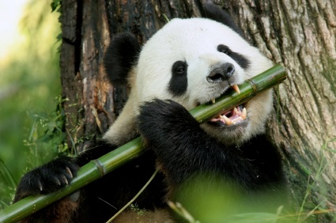

The Giant Panda
The giant pandas are the best known species yet the shyest and rarest animals in the world.
- Scientific Name: A. melanoleuca
- Average Height: 2-3 ft.
- Average Lifespan: 20 years
- Habitat: Bamboo forests
At first glance, the giant panda would seem to resemble a bear, but in fact its features show it has a stronger affinity with racoons. They are solitary animals spending about two-thirds of its day feeding and the remainder resting.